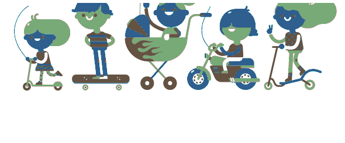

Aan de keukentafel bedacht
Waarom TweeHuizen bestaat, en wie het gemaakt heeft.
Ik ben Patrick, vader van vijf kinderen (Kioko, Mila, Noa, Kuba en Wolf) en samen met mijn vrouw Shanna leef ik al meer dan tien jaar in een samengesteld gezin.
TweeHuizen is geboren uit onze eigen dagelijkse praktijk. In al die jaren liepen we keer op keer tegen dezelfde problemen aan: het plannen van de zorg voor onze kinderen tussen twee huishoudens was ingewikkeld, onduidelijk en vaak een bron van frustratie.
Niet omdat de wil er niet was, maar omdat er simpelweg geen goed hulpmiddel bestond. Bestaande apps misten essentiële functies, waren te ingewikkeld of hielden geen rekening met de dynamiek van gescheiden ouders die samen het beste willen voor hun kinderen.
Het verbaasde me enorm dat er geen goede app bestond voor iets dat miljoenen gezinnen dagelijks raakt.
Van frustratie naar oplossing
Zoals bij de meeste goede oplossingen begint het bij een probleem dat je zelf ervaart. Ik kon geen bestaand product vinden dat écht werkte voor onze situatie. En als iets niet bestaat, waarom zou je het dan niet zelf bouwen? Met de technologie van vandaag is dat toegankelijker dan ooit.
Zo begon mijn reis naar TweeHuizen: een app die niet vanuit een vergaderzaal is bedacht, maar aan onze keukentafel. Want wie weet er beter wat een co-ouderschapsapp nodig heeft dan de mensen die er dagelijks mee te maken hebben?
Gebouwd met mijn gezin
Ik heb TweeHuizen niet in stilte ontwikkeld. Vanaf het eerste moment hebben Shanna en de kinderen meegedacht. Kioko, Mila, Noa, Kuba en Wolf kwamen allemaal met ideeën voor functies die zij belangrijk vonden, dachten mee over hoe de app eruit moest zien, en testten elke nieuwe versie met me. Hun stem zit verweven in elk onderdeel van de app.
De kinderen vroegen op een dag waarom ze 's ochtends nog altijd moesten onthouden wat er mee moest naar handbal, voetbal of muziekles. "Kan de app ons dat niet gewoon vertellen?" Uit die ene vraag is de herinneringen-met-spullen-functie geboren. Als je nu een activiteit toevoegt, vink je aan wat er mee moet (handbalschoenen, zwempak, voetbalschoenen, cadeautje) en de ouder die brengt (en het kind zelf, als hij of zij een eigen telefoon heeft) krijgt een melding op tijd:
"Over een uur: Noa naar handbal. Meenemen: handbalschoenen, sporttenue, bidon."
Zulke kleine dingen komen rechtstreeks van kinderen die wéten waar het meestal misgaat. Dat is precies wat ik bedoel met "aan de keukentafel bedacht".
Het resultaat is een app die niet alleen technisch werkt, maar die aansluit bij hoe gezinnen écht functioneren. Eerlijk, rustig en overzichtelijk, precies wat co-ouderschap nodig heeft. Ik hoop dat TweeHuizen ook voor jullie gezin rust brengt.

De inspiratie achter TweeHuizen
Patrick, Shanna, Kioko, Mila, Noa, Kuba & Wolf
Benieuwd wat TweeHuizen kan?
Ontdek alle functies op de homepage of stel je vraag.
Bekijk de features Hulp & Support